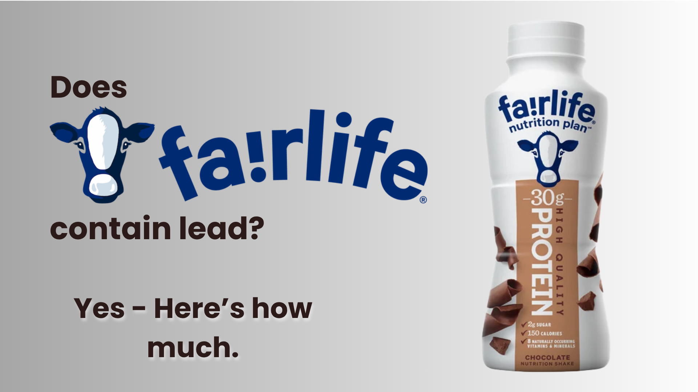

Fairlife Core Power has not been independently tested for heavy metals by Consumer Reports or Clean Label Project
Does Fairlife Protein Have Lead? Core Power Safety Analysis (2026)
❓ Direct Answer: Does Fairlife Core Power Have Lead?
Unknown — no independent test data exists. Fairlife Core Power has not been tested by Consumer Reports or Clean Label Project. Here's what we can and cannot say:
- Lead level: Unknown — no third-party test results published
- Consumer Reports ranking: Not included in Oct 2025 or Jan 2026 studies
- Prop 65 warning: None on packaging — a positive signal, not independent verification
- Risk category: Dairy-based, inherently lower risk than plant proteins — but unverified
- CPL rating: Unverified — choose tested alternatives if safety certainty matters
Does Fairlife Core Power Have Lead?
It's the right question to ask — and the honest answer is that we don't know, because no independent laboratory has published test results for Fairlife Core Power protein shakes.
Consumer Reports conducted two rounds of protein product testing in October 2025 and January 2026, covering 28 products total. Fairlife was not among them. Clean Label Project, which has tested 130+ protein powders, has also not published results for any Fairlife protein product.
What we can do is assess the risk based on what we know about Fairlife's formulation — and be clear about where inference ends and verified data begins.
| Product | Lead Per Serving | Testing Source | CPL Rating |
|---|---|---|---|
| Fairlife Core Power (14 oz) | Unknown — not tested | No independent data | ❓ Unverified |
| Fairlife Core Power Elite (42g) | Unknown — not tested | No independent data | ❓ Unverified |
| Premier Protein RTD (11 oz) | 0.59 µg/serving | Consumer Reports Jan 2026 — #6 of 28 | ✅ Safe for 1/day |
| OWYN Pro Elite RTD | Below detection | Consumer Reports Oct 2025 — #7 of 28 | ✅ Safe unlimited |
⚠️ What "No Prop 65 Warning" Actually Tells You
Fairlife Core Power does not carry a California Prop 65 warning for lead. This is a positive signal — it means Fairlife believes their product is below 0.5 µg lead per serving. But Prop 65 compliance is self-reported by manufacturers. It is not third-party verified at Consumer Reports' per-serving benchmark. The absence of a warning is meaningful but not the same as independent confirmation.
How We Analyzed Fairlife Core Power
Independent Data Sources: Consumer Reports October 2025 + January 2026 testing (28 products) & Clean Label Project database. Fairlife was not included in either dataset.
Our 4-Step Safety Protocol:
- Source: We aggregate verified data from third-party labs (Consumer Reports, Clean Label Project, NSF).
- Benchmark: Contamination is measured against California Prop 65 safe harbor levels (0.5 µg/day lead).
- Categorize: Products are ranked as Safe, Limit Use, or Avoid based on toxic accumulation.
- Flag gaps: Where no independent data exists, we say so explicitly rather than inferring a verdict.
✓ 100% Independent: Clean Protein List accepts no brand sponsorships or payments for rankings.
Analysis by US Military Veteran & Supplement Safety Researcher, Ray Rothwell.
What We Know and Don't Know About Fairlife Safety
Quick Decision: Want Certainty Without Reading the Whole Article?
If you drink Fairlife daily and want verified safety:
🥛 Stay RTD — Verified Safe
Switch to: Premier Protein RTD
CR #6, 0.59 µg lead, safe for 1/day — cheaper than Fairlife
Buy Premier Protein →💰 Zero Lead + Save $600/Year
Switch to: ON Gold Standard powder
CR #5, lead below detection, $0.75/serving
Buy ON Gold Standard →📋 Table of Contents
Why Wasn't Fairlife Tested by Consumer Reports?
Consumer Reports tested 28 protein products across two studies. Fairlife Core Power is one of America's top-selling protein RTDs — its absence from the test set is worth understanding.
Most Likely Reason: Product Category
Fairlife Core Power uses ultra-filtered whole milk as its base — not whey protein isolate. Consumer Reports' studies focused primarily on protein powders and whey-based RTD shakes. Ultra-filtered milk beverages occupy a different product category, which may explain why Fairlife wasn't included in either test round. This is not evidence of a problem — it's a categorization issue.
Also Possible: Test Selection Criteria
Consumer Reports selects products by market share at the time testing is finalized. Fairlife Core Power's explosive growth happened primarily in 2023–2024. The October 2025 study's product list may have been locked before Fairlife reached the sales volume that would guarantee inclusion. Future Consumer Reports testing rounds are likely to include it.
Important: The absence of testing is not evidence of contamination. It also is not evidence of safety. It is simply the absence of data. CPL's position is to say so clearly rather than fill the gap with inference dressed up as fact.
Dairy-Based vs Whey Isolate: Why Fairlife's Formulation Matters
Fairlife Core Power is fundamentally different from most protein RTDs. Understanding that difference helps put the risk in context — even without test data.
🥛 How Fairlife Is Different
Traditional whey protein RTDs (Premier Protein, Muscle Milk): Whole milk → whey extracted as cheese byproduct → filtered and isolated → protein concentrated. Heavy metals concentrate alongside protein during extraction.
Fairlife Core Power: Whole milk → ultra-filtered to remove lactose and concentrate protein → less intensive processing than whey isolation. Proteins are concentrated but from whole milk, not isolated from a byproduct stream.
The Contamination Pathway Comparison
| Contamination Source | Whey Isolate RTDs | Ultra-Filtered Milk (Fairlife) |
|---|---|---|
| Lead from cattle feed/water/soil | Present — concentrated during whey extraction | Present — but potentially less concentrated in whole milk base |
| Processing equipment leaching | Higher — more processing steps, higher heat/pressure | Lower — gentler filtration process |
| Protein concentration factor | High — isolate is ~90% protein, highly concentrated | Moderate — 26g protein per 14 oz, less concentrated than isolate |
| Plant protein contamination | N/A — dairy-based | N/A — dairy-based |
✅ The Reasonable Inference
Fairlife's dairy base and less intensive processing suggest it may fall in a similar or lower contamination range than tested whey RTDs like Premier Protein (0.59 µg). But "suggests" is not "confirms." Consumer Reports found that even within the whey category, results varied significantly by manufacturer. Without testing Fairlife specifically, we cannot assign a number.
⚠️ What We Cannot Assume
Fairlife's source dairy cattle face the same environmental lead exposure as any other dairy operation — contaminated pasture soil, water, and feed supplements. Coca-Cola's ownership provides resources for quality control but does not guarantee independent verification. The processing advantage is real but not quantified for this specific product.
⚡ Quick Check: Is YOUR Protein Safe?
Tell us what you're using — we'll show you the safety data in 5 seconds:
What Fairlife's Manufacturing Tells Us
Without test data, we can examine Fairlife's quality claims to assess what they do and don't address for heavy metal safety.
| Fairlife Claim | What It Means | Relevant to Heavy Metals? |
|---|---|---|
| "Ultra-filtered" | Removes lactose, concentrates protein | ⚠️ Doesn't specifically target heavy metals |
| "Cold-filtered" | Lower temperature processing | ✅ May reduce equipment leaching vs high-heat processing |
| "Owned by Coca-Cola" | Enterprise-scale quality systems | ✅ Resources for extensive internal testing exist |
| No Prop 65 warning | Manufacturer believes lead <0.5 µg/serving | ✅ Positive signal — self-reported, not independently verified |
| No third-party certification | Clean Label Project, NSF not obtained | ❌ No external verification of heavy metal claims |
Risk Assessment: Who Should Be More Careful
✅ Lower Concern: Occasional Users
- 2–3 Fairlife shakes per week or fewer
- Not pregnant, not a teenager
- No other significant heavy metal exposure sources
- Comfortable with Prop 65 absence as a signal
Assessment: Risk is likely low for occasional consumption. Even if Fairlife contains lead at Premier Protein's confirmed level (0.59 µg), 2–3/week puts you well under the daily safe harbor limit.
⚠️ Higher Concern: Daily Users and Vulnerable Groups
- Drinking 1–2 Fairlife shakes every day
- Pregnant or planning pregnancy — lead crosses the placenta
- Teenagers — developing brains absorb lead more efficiently
- Giving to children
- Other heavy metal exposure sources (old home, water supply)
Assessment: Choose tested alternatives. Without knowing Fairlife's actual lead level, daily consumption at this frequency represents an unknown cumulative exposure. Verified alternatives exist at the same or lower price.
Verified-Safe Alternatives to Fairlife Core Power
The practical question: is there a tested RTD that matches Fairlife's convenience and protein delivery? Yes.
✅ Premier Protein RTD — Consumer Reports #6
Lead: 0.59 µg/serving — verified safe for 1/day
Protein: 30g per 11 oz
Price: ~$1.50–2.00/shake (cheaper than Fairlife)
vs Fairlife: Tested vs untested. More protein. Cheaper. The verified choice for RTD convenience.
Buy Premier Protein →❓ Fairlife Core Power — Not Tested
Lead: Unknown — no independent data
Protein: 26g per 14 oz
Price: ~$1.75–2.25/shake
Reality: Likely lower risk than plant proteins due to dairy base. But without test data, daily users are relying on manufacturer self-reporting rather than independent verification.
If You Want Zero Detectable Lead:
OWYN Pro Elite
Lead: Below detection limits
Protein: 35g per serving
Price: ~$2.50–3.00/shake
The only RTD tested by Consumer Reports with zero detectable lead. Plant-based — different taste profile than Fairlife.
Buy OWYN Pro Elite →ON Gold Standard (DIY RTD)
Lead: Below detection limits
Price: $0.75/serving
Time: 30 seconds
Consumer Reports #5. Verified zero lead. Saves $400–600/year vs Fairlife RTD. 30-second mix is the only trade-off.
Buy ON Gold Standard →Fairlife Safety FAQ
Does Fairlife protein have lead?
Unknown. No independent laboratory has published test results for Fairlife Core Power. Consumer Reports did not include it in their October 2025 or January 2026 studies. Clean Label Project has not published Fairlife results. The specific lead level per serving cannot be stated without test data.
How much lead is in Fairlife Core Power?
No published figure exists. Unlike Premier Protein (0.59 µg, Consumer Reports #6) or Muscle Milk (1.25 µg, Consumer Reports #17), Fairlife has no third-party test result in the public domain. Fairlife's absence of a Prop 65 warning suggests the manufacturer believes it's below 0.5 µg/serving, but this is not independent verification.
Is Fairlife safer than Premier Protein?
Cannot be determined. Premier Protein is verified at 0.59 µg lead per serving (Consumer Reports #6, safe for 1/day). Fairlife has no independent test data. Fairlife's less-processed dairy base is a reasonable basis for lower risk inference, but inference is not measurement. Premier Protein is the safer choice in the sense that its safety is actually known.
Why wasn't Fairlife tested by Consumer Reports?
Most likely because Fairlife Core Power uses ultra-filtered whole milk rather than whey protein isolate, placing it in a different product category from the powders and whey RTDs that Consumer Reports focused on. It may also reflect the product selection timeline — Fairlife's market dominance accelerated in 2023–2024, potentially after the test list was finalized. Its absence is a categorization issue, not a red flag.
Is Fairlife safe during pregnancy?
Not recommended without verified test data. Lead crosses the placental barrier and affects fetal brain development — no safe level exists during pregnancy. Without confirmed lead levels for Fairlife, pregnant women should choose products with independently verified non-detectable lead: Optimum Nutrition Gold Standard (CR #5), Dymatize Super Mass Gainer (CR #2), or OWYN Pro Elite (CR #7).
Does Fairlife have a Prop 65 warning?
No. Fairlife Core Power does not carry a California Prop 65 warning for lead, which means Fairlife represents that its lead content is below 0.5 µg per serving. This is a meaningful positive signal. It is self-reported by the manufacturer, not independently verified at Consumer Reports' per-serving benchmark methodology.
Is Fairlife Core Power Elite (42g protein) safer or less safe than regular Core Power?
Unknown for both, but Elite's higher protein concentration (42g vs 26g) means that if heavy metals are present in the milk source, they would be more concentrated in the Elite version. The same logic applies to why whey isolates sometimes test higher than concentrates — more protein per serving means more concentration of everything bound to that protein. If you're choosing between Core Power options pending test data, regular Core Power is the lower-risk choice.
Will Fairlife be tested by Consumer Reports in the future?
Likely yes. Fairlife Core Power is now one of the top-selling protein RTDs in the US by volume, which typically drives inclusion in Consumer Reports' ongoing testing. There is no announced timeline, but its market position makes future testing probable. CPL will update this article as soon as independent data becomes available.
The Bottom Line on Fairlife Core Power
🔎 Find Your Verified-Safe Alternative
Take our 60-second quiz to get personalized protein recommendations with confirmed independent testing data.
Find Your Safe Protein →Sources:
- Consumer Reports, "Protein Powders and Shakes Contain High Levels of Lead," October 14, 2025 — 23 products tested; Fairlife not included.
- Consumer Reports, "These 5 Protein Powders Had Low Levels of Lead," January 8, 2026 — 5 additional products tested; Fairlife not included.
- Clean Label Project, Protein Powder Purity Award database — Fairlife not listed.
- California OEHHA, Proposition 65 Safe Harbor Levels — lead threshold 0.5 µg/day.
- Fairlife LLC, Product information and manufacturing process documentation.
Last Updated: April 2026
Disclosure: This article contains affiliate links. If you buy through them, we may earn a commission at no extra cost to you. We only recommend products with verified independent safety testing.